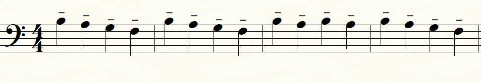
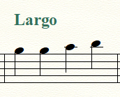

Memory Cards Escala Sibemol
Score:
Marcaciones de Articulación Musical
En este contenido, exploraremos las diferentes marcaciones de articulación utilizadas en la música para indicar cómo se deben tocar las notas en términos de su duración y conexión.
Staccato
El staccato indica que la nota debe ser tocada de manera corta y separada, como si estuviera "picoteada".
Staccatissimo
El staccatissimo indica que la nota debe ser tocada de manera muy corta y separada, siendo más enfático que el staccato regular.
Tenuto
El tenuto indica que la nota debe ser sostenida durante su duración completa y tocada de manera más suave y legata.
Acento
El acento indica que la nota debe ser tocada con un énfasis o una intensidad adicional.
Marcato
El marcato indica que la nota debe ser tocada con un acento y una separación marcada de las notas adyacentes.
Portato
El portato combina elementos de legato y staccato, indicando que las notas deben ser tocadas de manera suave pero separada, con un breve acento en cada una.
Indicaciones de Dinámica Musical
En esta sección, exploraremos las diferentes indicaciones de dinámica utilizadas en la música para indicar el volumen y la intensidad de la interpretación.
fff (fortississimo)
La indicación "fff" (fortississimo) es la máxima indicación de intensidad en la música. Significa que la música debe ser tocada extremadamente fuerte, con la máxima potencia y energía.
Fortissimo (ff)

Fortissimo (ff) indica que la música debe ser tocada muy fuerte, con gran intensidad.
f (forte)
La indicación "f" (forte) indica que la música debe ser tocada fuerte, con una intensidad considerable, pero no tan extrema como "ff" o "fff".
piano (p)
piano (p) sugiere que la música debe ser tocada muy suavemente, con gran delicadeza y una intensidad muy baja, creando un efecto de suavidad y delicadeza en la interpretación.
Indicaciones de Tempo Musical
En esta sección, exploraremos las diferentes indicaciones de tempo utilizadas en la música para indicar el ritmo y la velocidad de la interpretación.
Allegro
Allegro es una indicación que sugiere un tempo rápido y animado.
Largo
Largo es una indicación que sugiere un tempo lento, generalmente en el rango de 40 a 60 BPM (pulsos por minuto).
Adagio
Adagio es una indicación que sugiere un tempo lento y solemne, generalmente en el rango de 60 a 70 BPM (pulsos por minuto).
Andante
Andante es una indicación que sugiere un tempo moderado y agradable, generalmente en el rango de 70 a 90 BPM (pulsos por minuto).
Moderato
Moderato es una indicación que sugiere un tempo moderado, generalmente en el rango de 90 a 110 BPM (pulsos por minuto).
Vivace
Vivace es una indicación que sugiere un tempo rápido y lleno de vida, generalmente en el rango de 140 a 160 BPM (pulsos por minuto).
Presto
Presto es una indicación que sugiere un tempo extremadamente rápido, generalmente por encima de 160 BPM (pulsos por minuto).
Indicaciones de Carácter Musical
En esta sección, exploraremos las diferentes indicaciones de carácter utilizadas en la música para expresar el estado de ánimo y el estilo de interpretación.
Dolce

Dolce significa "dulce" y sugiere que la música debe ser interpretada de manera suave y melódica.

Indicaciones de Expresión Musical
En esta sección, exploraremos las diferentes indicaciones de expresión utilizadas en la música para transmitir emociones y estilo en la interpretación.
Rubato

Rubato permite una cierta libertad rítmica y expresiva en la interpretación musical, permitiendo acelerar o ralentizar el tempo de manera temporal.